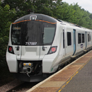
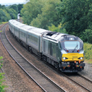
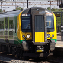
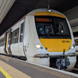
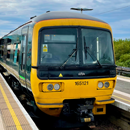

IF的个人小屋
柯林老师的列车种别理论
如果英国铁路有列车种别了会怎么样呢？
柯林以前写了一篇《列车种别理论》的毕业论文
日后成为了大北方铁路等一众铁路运营商设置种别的理论基础

大北方铁路 Great Northern
在2020年5月设置种别，是英国第一个设置种别的铁路运营商。
包含2020夏季的种别图和运行形态图；2021-2022冬春季的种别图和运行形态图；车头LED显示屏示例；配合种别设置而使用的Class 387新涂装。
包含2020夏季的种别图和运行形态图；2021-2022冬春季的种别图和运行形态图；车头LED显示屏示例；配合种别设置而使用的Class 387新涂装。

奇尔特恩铁路 Chiltern Railways
在2021年5月设置种别
包含种别图
包含种别图

伦敦西北铁路 西海岸主线（伦敦-伯明翰） LNWR West Coast Main Line (London-Birmingham)
在2021年9月设置种别（与伊甸条约事件同月）
包含种别图（伦敦-伯明翰段）。
包含种别图（伦敦-伯明翰段）。

c2c 伦敦、蒂尔伯里和绍森德线（London, Tilbury and Southend line）
在2022年2月14日设置种别（当天若藻正好在大干一场）
包含种别图和运行形态图。
包含种别图和运行形态图。
南方铁路 东部海岸线 Southern East Coastway Line
在2022年3月1日后的设置种别（同时Marshlink Line的电气化工程完工以及东南铁路的高速列车开始在东部海岸线直通运行）
包含种别图和运行形态图。
包含种别图和运行形态图。

伦敦地上铁 格林福德线 London Overground Greenford Line
2022年3月开始，伦敦地上铁接管原大西部铁路（Great Western Railway）格林福德支线（Greenford Branch Line）的列车服务并延长至西莱斯里普（West Ruislip）（借道新北主线（New North Main Line）和奇尔特恩主线（Chiltern Main Line））。同时列车改用由千年科技学院工程师部制造的全新蓄电池列车。
包含前后对比的线路图。
包含前后对比的线路图。